Grid node expressiveness ceiling — reference vs pipeline vs hand-authored
All 6 cards hand-authored to ship quality. Gap log: NODE-GAPS.md. 2026-06-10T10:27
velvet_q1_tl pipeline grid score 0.15 → hand-authored (6 iters)
reference
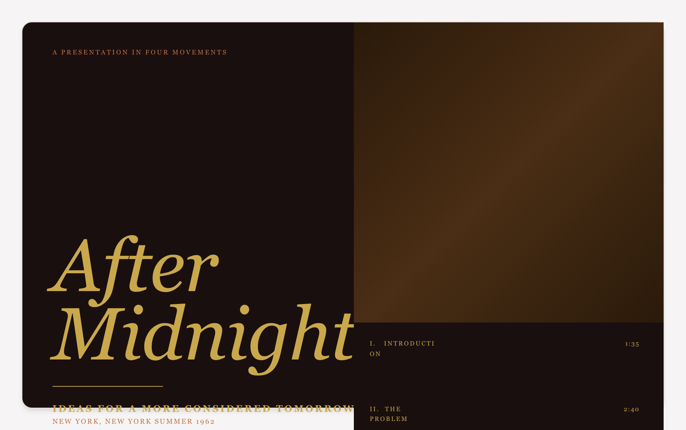
pipeline iter-0
hand-authored final (iter-7-gapfix)
capsule_q3_bl pipeline grid score 0.15 → hand-authored (4 iters)
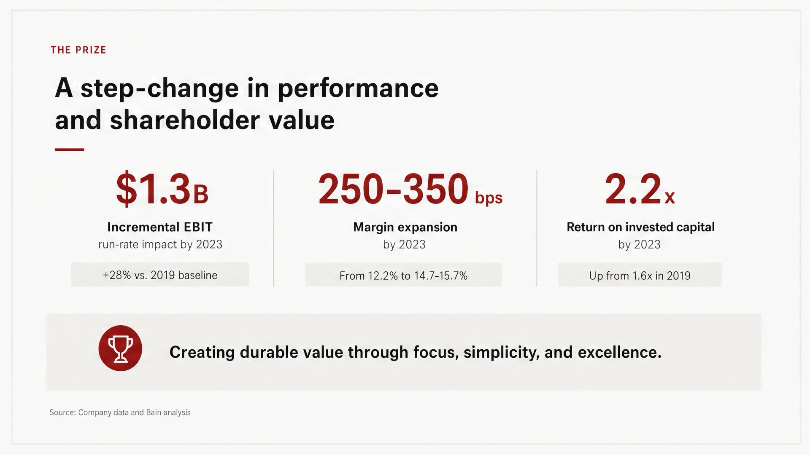
reference
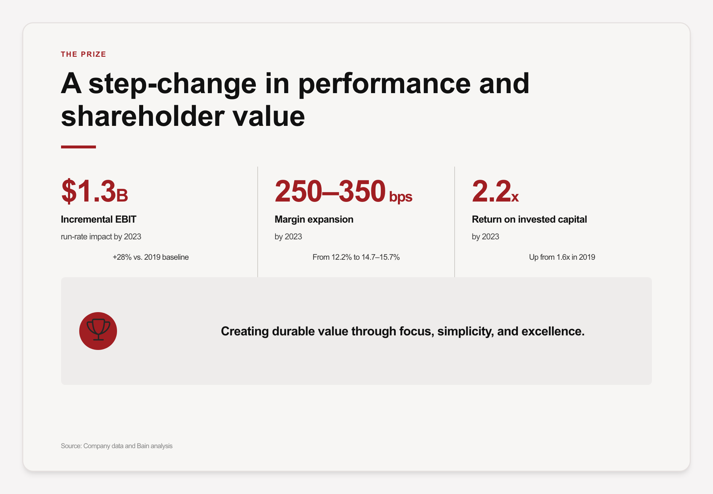
pipeline iter-0
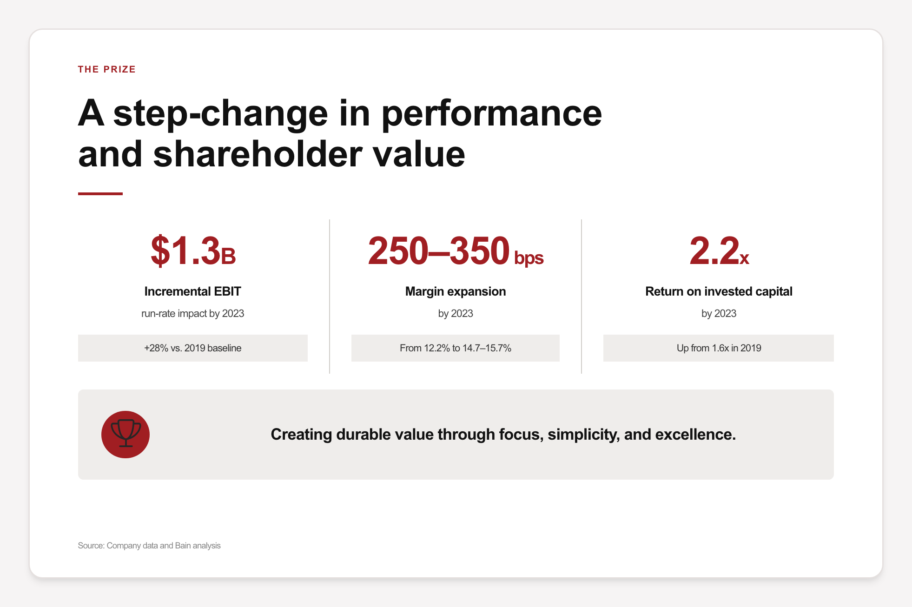
hand-authored final (iter-4-gapfix)
brutus_q1_tl pipeline grid score 0.25 → hand-authored (2 iters)
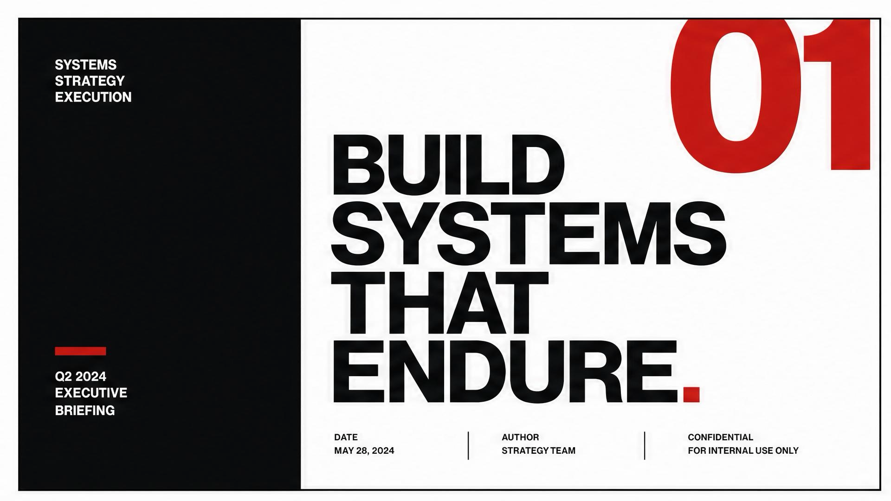
reference
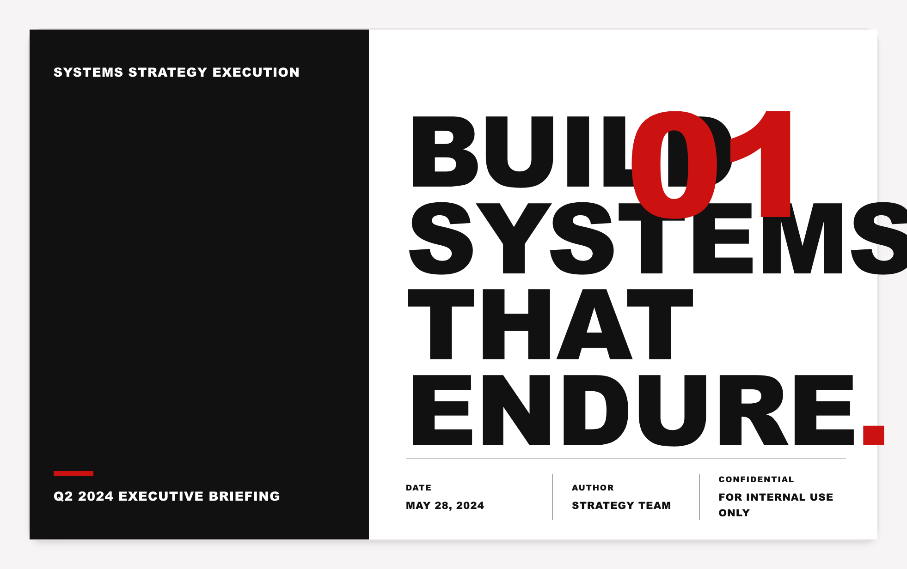
pipeline iter-0
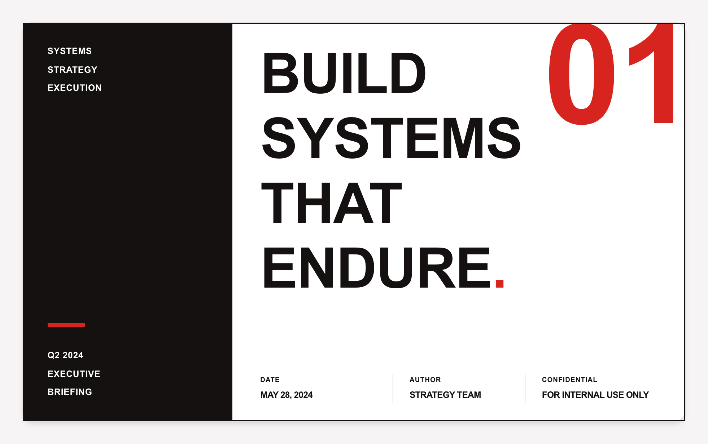
hand-authored final (iter-2)
vitrine_q1_tl pipeline grid score 0.2 → hand-authored (3 iters (agent))
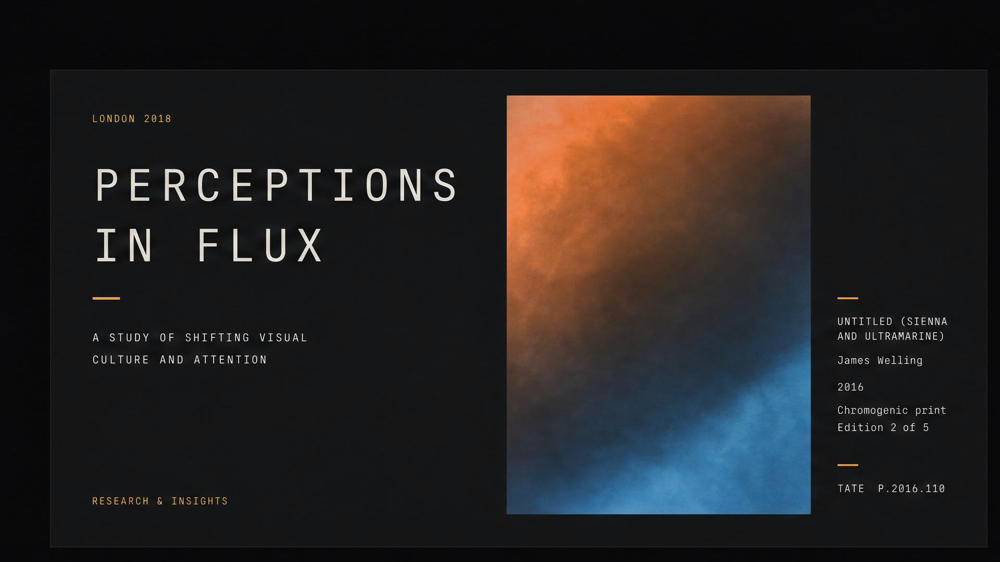
reference
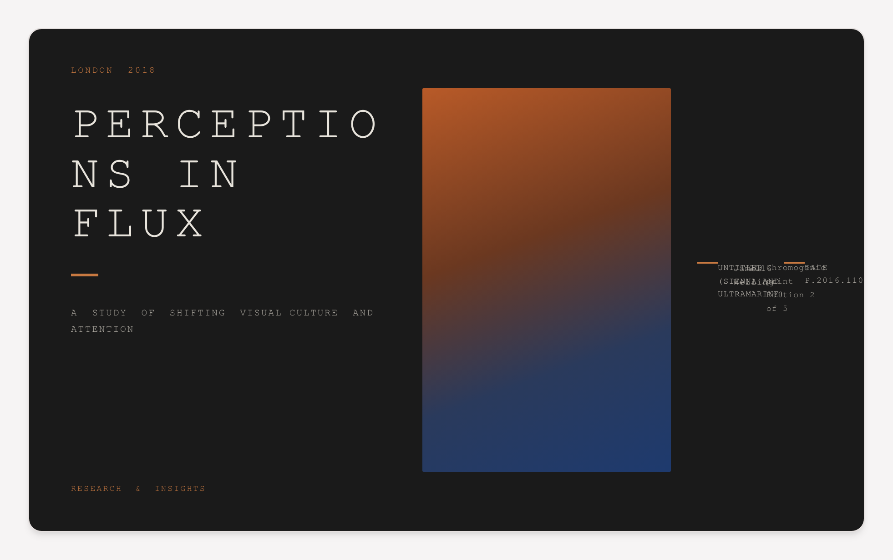
pipeline iter-0
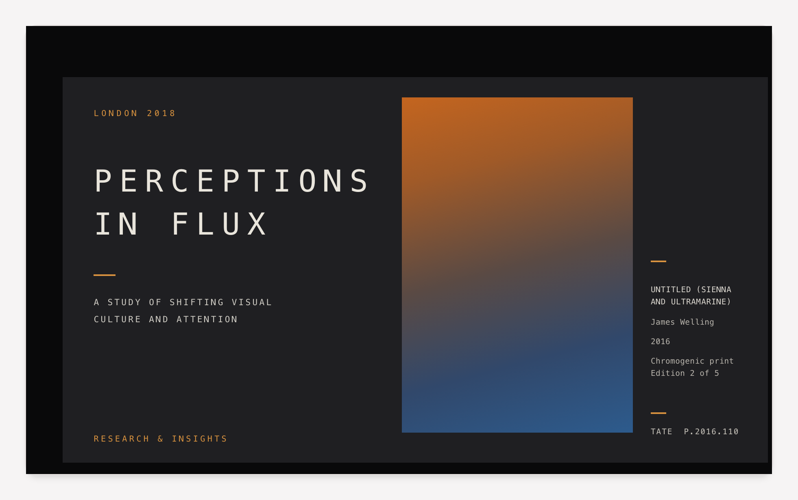
hand-authored final (iter-3)
findings_q4_br pipeline grid score 0.15 → hand-authored (3 iters)
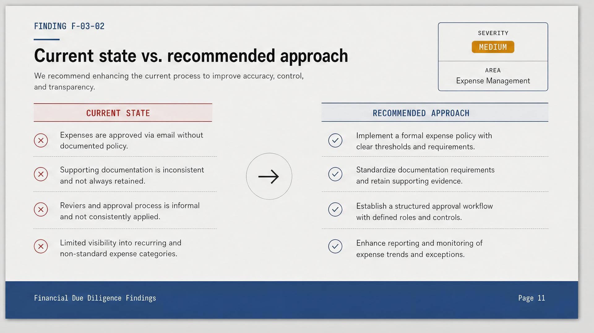
reference
pipeline iter-0
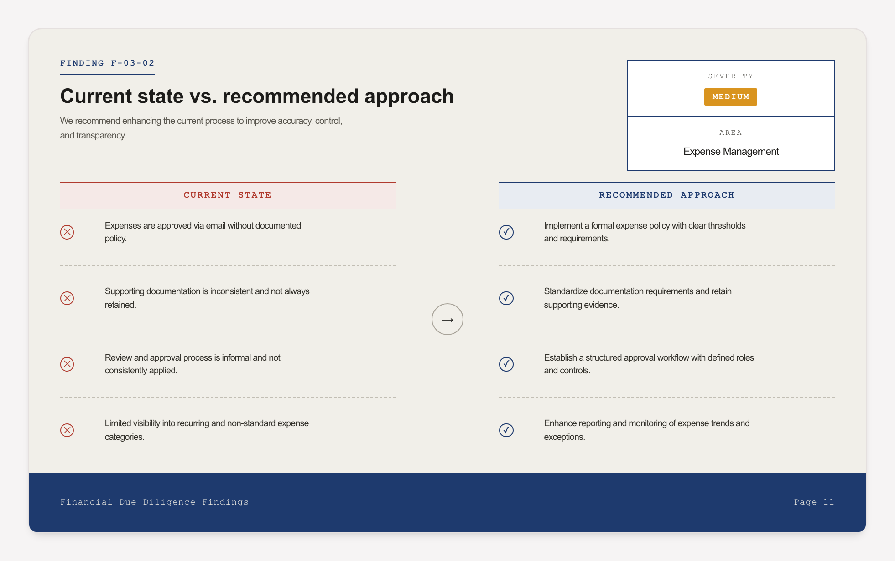
hand-authored final (iter-3)
cohort_q3_bl pipeline grid score 0.2 → hand-authored (5 iters)
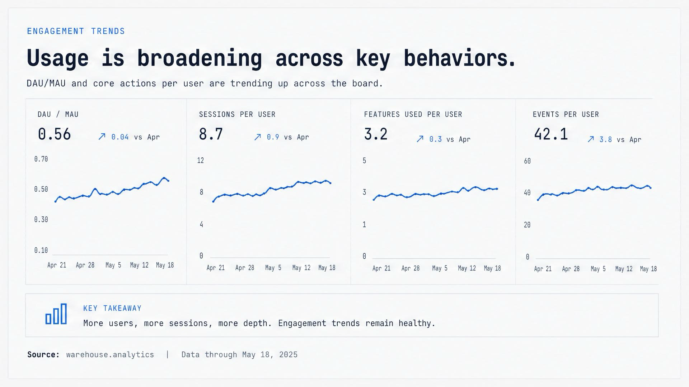
reference
pipeline iter-0
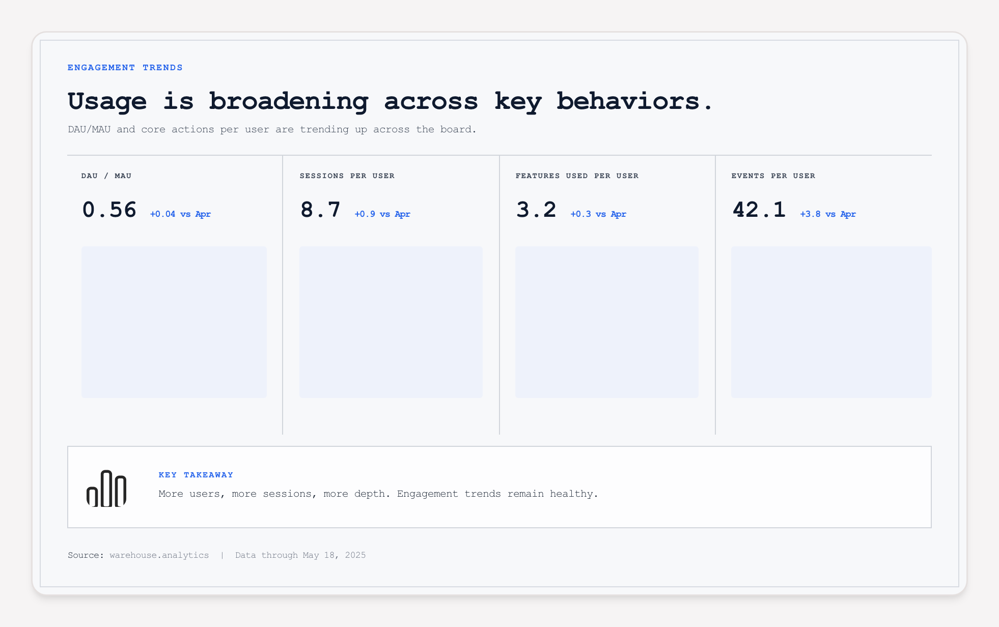
hand-authored final (iter-5)